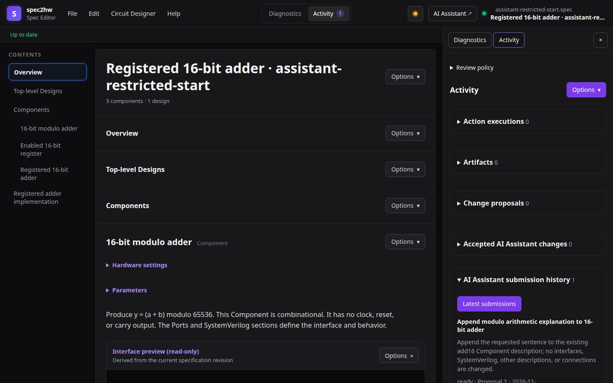
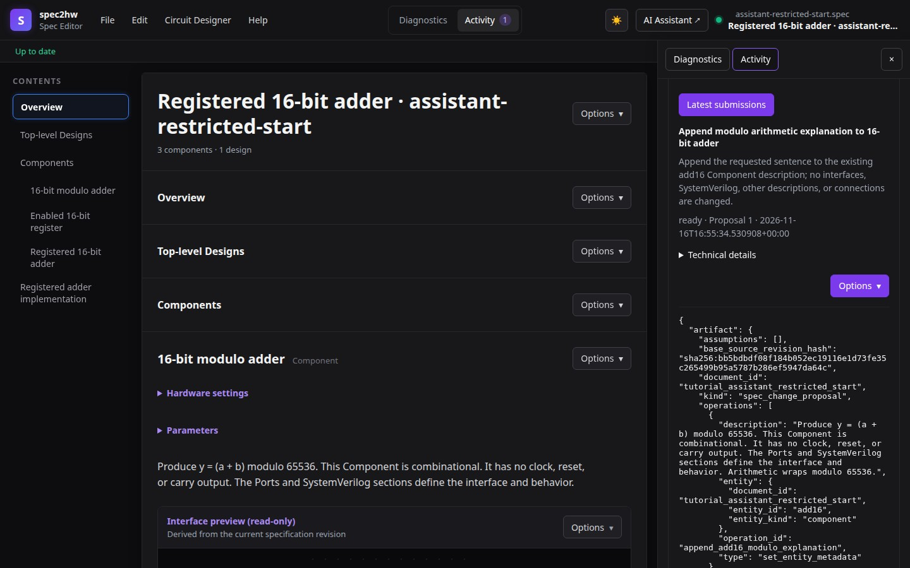

AI ASSISTANT · 7 MINUTES
Review restricted Spec proposals
Decide on a pending Spec proposal and inspect its saved outcome.
Before you start
An isolated environment started with --require-designer-approval, AI Assistant, and model credentials. Do not restart a shared environment for this exercise.
Actions
- Open the exact completed Spec and launch its document-bound AI Assistant. Ask: “Change only the adder explanation to add that arithmetic wraps modulo 65536. Keep the interface, RTL, and connections unchanged.”
- If the Assistant asks which text to edit, select the Component’s existing explanation. Wait for a pending content proposal. A text-only change does not require a structural architecture review. Inspect the proposal target and summary; pending content is not saved content.


- In Spec Editor, open the Activity view and AI Assistant submission history. Select Details and diff for that exact proposal. Compare the explanation before and after.
- Select Approve to save the stored proposal, or Reject to leave the source unchanged. The submission-history controls are Approve and Reject. Use the controls for that exact stored proposal.
- Inspect the saved-state result in history and reopen the Spec. If approved, the explanation persists and the hardware remains unchanged. Architecture approval in the Assistant is a separate decision from this content save.


Check your result
You can identify pending, approved, or rejected content and verify the corresponding saved source.
Try it yourself
Prepare a second text-only proposal and reject it. Confirm its text does not appear after reopening.
If it fails
If valid content saves immediately, your environment uses automatic mode. Use an isolated restricted environment from the setup guide. Do not pretend that an automatic save was a pending review.
Continue
CONTINUEExplore another feature →Reference: ai assistant · Complete example